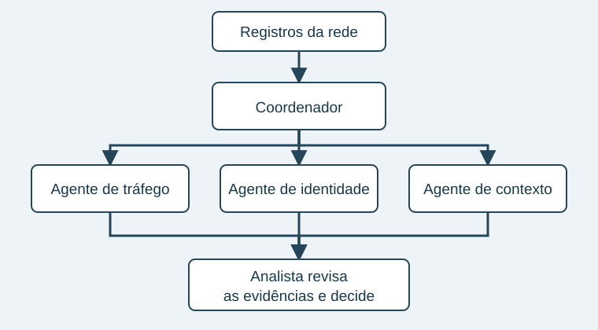

Quem está olhando a rede?
O alerta chegou. E agora?
Imagine começar o dia com centenas de alertas na tela. Alguns são repetidos, outros são falhas de configuração e um deles pode ser o começo de uma invasão. O problema não é só receber informação: é descobrir o que merece atenção primeiro.
Escolhi esse tema porque redes, segurança e inteligência artificial estão cada vez mais próximas. Um agente pode ajudar a organizar uma investigação, mas também pode tomar uma decisão errada ou ser usado por quem está atacando.
A proposta do CyberOps Lab é entender esse cenário com exemplos, sem tratar toda novidade como uma solução pronta.

Por onde começar
Um exemplo que já existe
A Microsoft descreve agentes do Security Copilot que automatizam tarefas repetitivas e trabalham com solicitações e eventos do ambiente. Isso mostra que a discussão já chegou às ferramentas de segurança.
Fonte: Visão geral dos agentes do Microsoft Security Copilot.